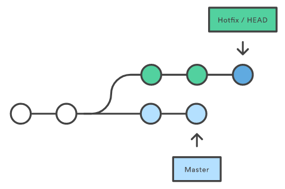

Системы контроля версий
Категория программных инструментов, которые помогают команде управлять изменениями
исходного кода с течением времени. VCS отслеживает каждую модификацию
кода в специальном хранилище, как в базе данных.
- Полная история изменений каждого файла.
- Ветвление и слияние.
- Возможность проследить изменения до их источника.
- Командная разработка.
Установка Git
После установки:
$ git --version
$ git config --global user.name "имя"
$ git config --global user.email "почта"
Настройка репозитория
Репозиторий Git - это виртуальное хранилище проекта. Он позволяет
сохранять версии файлов, к любой из которых можно получить доступ когда
это необходимо.
git init
Чтобы создать новый репозиторий, используется команда
git init. Это одноразовая команда, которую выполняют во время
первоначальной настройки нового репозитоия. Выполнение этой команды создаст
новый подкаталог
.git
в вашем текущем рабочем каталоге. Это также создаст ветку
master.
git clone
Если проект уже существует в удаленном репозитории,
git clone используется для создания его копии.
$ git clone [URL-адрес репозитория]
URL-адрес репозитория состоит из 3-х частей:
- HOSTNAME
- USERNAME
- REPONAME
Составляющие git проекта
- Working directory - рабочая директория, хранит файлы проекта.
- Staging area - промежуточная область, область подготовленных файлов.
- Local repository - сам локальный репозиторий, хранит историю коммитов.

Шаблон edit/stage/commit
Сначала редактируются файлы в рабочем каталоге. Когда нужно сохранить копию
текущего состояния проекта, изменения добавляюся в stage. После этого,
делается коммит, и изменения записываются в историю проекта.

git status/add/commit
git status отображает состояние рабочего каталога и промежуточной
области.
Команда
git add добавляет изменения в рабочем каталоге в промежуточную
область. Она сообщает Git, что вы хотите включить обновления определенного
файла в следующий коммит.
Однако
git add не влияет на репозиторий - изменения фактически не записываются
до тех пор, пока вы не выполните
git commit.
Детально о git commit
git commit передает поэтапный снимок в историю проекта. Записанные
снимки можно рассматривать как «безопасные» версии проекта. Снимки
всегда коммитятся в локальный репозиторий.
Так же, как промежуточная область является буфером между рабочим каталогом
и историей проекта, локальный репозиторий каждого разработчика представляет
собой буфер между их локальными изменениями и центральным хранилищем.
Снимки (snapshots)
Git основан на снимках, в которые записывается все содержимое каждого файла
в каждом коммите.

.gitignore
Файл может быть в 3-х состояних:
- tracked - файл, который ранее был помещен в stage или commit.
- untracked - файл, который не был помещен в stage или commit
- ignored - файл, который Git'у явно сказали игнорировать.
Игнорируемые файлы, это как правило артефакты сборки и системные файлы, которые
нужно исключить из истории репозитория. Для указания списка игнорируемых
файлов/папок используется файл
.gitignore.
git log
Отображает историю коммитов.
git status проверяет рабочий каталог и промежуточную область,
git log работает только с зафиксированной историей.

Ветвление (branching)
Ветвь представляет собой независимую линию развития проекта, позволяющую
реализовать новую функциональность проекта. Новые коммиты фиксируются
в истории текущей ветви.

HEAD
Указатель на текущий коммит в текущей ветви. При создании новых коммитов,
HEAD каждый раз перемещается на самый последний коммит в текущей ветви.

git branch
git branch позволяет создавать, переименовывать и удалять ветви.
Она не позволяет переключаться между ветвями. По этой причине она тесно
связана с командами
git checkout и
git merge.
$ git branch - выведет все ветви в репозитории.
$ git branch имя - создаст ветвь с указаным именем.
$ git branch -d имя - удалит указаную ветвь.
$ git branch -m имя - переименует
текущую ветвь
git checkout
Позволяет перемещаться между ветвями. Переход в ветвь обновляет файлы в рабочем
каталоге в соответствии с версией, хранящейся в этой ветке, и говорит
Git записывать все новые коммиты в эту ветку.
$ git checkout имя-ветки - перейти в указанную ветвь, которая уже
создана. Git делает ветвь текущей и обновиляет рабочий каталог.
$ git checkout -b имя-новой-ветки - удобное сокращение, флаг
-b говорит создать ветвь с указаным именем, а
checkout перейдет в нее после создания.
git merge
Слияние - это способ совместить раздвоенную историю.
$ git merge branch-to-merge - берет две ветви и сливает их в одну.
Сливает
в текущую ветвь, которая будет обновлена чтобы отразить слияние,
но целевая ветвь не будет затронута.
merge сохраняет историю ветви и создает новый коммит.
Для отмены слияния используется
git merge --abort.
git rebase
$ git rebase branch-to-rebase-to - так же сливает две ветви. В
отличии от
merge, выполняется в ветви которую мы хотим слить. Целевая ветвь
будет обновлена чтобы отразить слияние, но текущая ветвь не будет затронута.
Не создает коммита.
Это может нарушить историю в публичных ветвях, используйте для работы в своих
приватных ветвях.
Merge vs Rebase
Conflicts
Если две ветви, которые вы пытаетесь объединить, изменили одну и ту же часть
одного и того же файла, Git не сможет определить, какую версию использовать.
Когда возникает такая ситуация, она останавливается прямо перед фиксацией
слияния, чтобы человек разрешил конфликты вручную.
Разрешение конфликтов
Большая часть процесса слияния заключается в том, что для разрешения конфликтов
слияния используется знакомый рабочий процесс edit/stage/commit. Когда
вы сталкиваетесь с конфликтом слияния, запуск команды
git status показывает, какие файлы нужно разрешить.
Затем нужно исправить файлы "как надо". Когда вы будете готовы завершить
слияние, все, что нужно сделать, это запустить
git add, чтобы сообщить Git о разрешении конфликта. Затем
git commit для генерации коммита слияния.
Git stash
git stash временно сохраняет изменения которые были внесены в
свою рабочую копию, чтобы разработчик мог работать над чем-то другим,
а затем вернуться и повторно применить их позже. Это добно если нужно
быстро переключить контекст и работать над чем-то другим, но разработчик
уже над чем-то работает и не готов сделать коммит.
Git stash
$ git stash - создаст новый stash
$ git stash list - выведет все stash'ы
$ git stash show - показать последний stash
$ git stash pop - применит последний stash
$ git stash clear - очистит
все stash'ы
git pull
$ git pull origin ветвь - получит все последние изменения из удаленной
ветки и применит их к текущей. Алгоритм применения изменений похож на
merge.
$ git pull --rebase - работает как
rebase, порядок коммитов не будет сохранен. Будут вытянуты все
изменения удаленного репозитория, применит их к проекту так, как буд
то ваших изменений еще нету, и уже потом поверх них будут применены локальные
изменения.